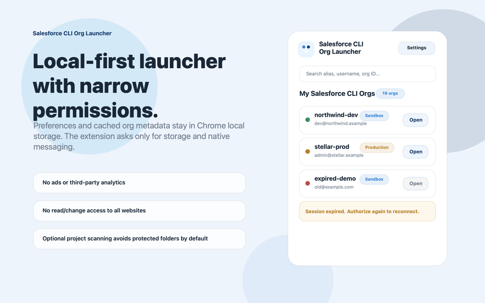

Launch orgs fast
Open Salesforce CLI authenticated orgs from Chrome without manually running `sf org open`.
A polished launcher for Salesforce CLI authenticated orgs. Search aliases, spot expired sessions, group environments, open Setup, and launch the right org without digging through terminal output.

Chrome installs the extension. The companion host is installed once per machine because Chrome cannot silently install local native messaging hosts.
npx --yes github:kiranvm143/salesforce-cli-org-launcher-service-worker install
Setup
The extension, service worker, and local companion work together to make CLI-authenticated orgs easy to find, group, and open.
Open Salesforce CLI authenticated orgs from Chrome without manually running `sf org open`.
Connected, expired, and unreachable statuses are shown clearly with safe actions.
Create custom groups for demos, releases, UAT, or daily work. They stay available after reopen.
Auth new orgs, cache, theme, and optional project scanning live in a dedicated settings view.
Two pieces are required: the Chrome extension from Web Store and the local companion that lets Chrome talk to Salesforce CLI.
Install Salesforce CLI Org Launcher from the Chrome Web Store.
The command detects macOS, Windows, or Linux and installs the right native host package.
Open the popup, click Refresh, then search and open your Salesforce CLI orgs.
Most users should use the one-command setup. Manual packages are available for managed or offline distribution.
npx --yes github:kiranvm143/salesforce-cli-org-launcher-service-worker install
Fallback ZIP when company policy blocks `npx` or GitHub package install.
Fallback EXE for managed desktop teams that prefer packaged installation.
Portable ZIP for offline or managed PowerShell installation.
Clean screenshots for the Web Store and public docs, using neutral demo org names.

Create and manage org groups that remain available across extension opens.

Keep auth, cache, theme, and optional project scanning away from the main launcher list.

When the companion is missing, users see prerequisites and the exact command to run.

No broad website access. Preferences and cached org metadata stay local.
The launcher is built around local productivity and asks only for the permissions needed for this workflow.
Saves local settings, favorites, groups, theme preferences, and cached org metadata inside Chrome storage.
Lets the extension communicate with the installed local companion host that runs Salesforce CLI commands.